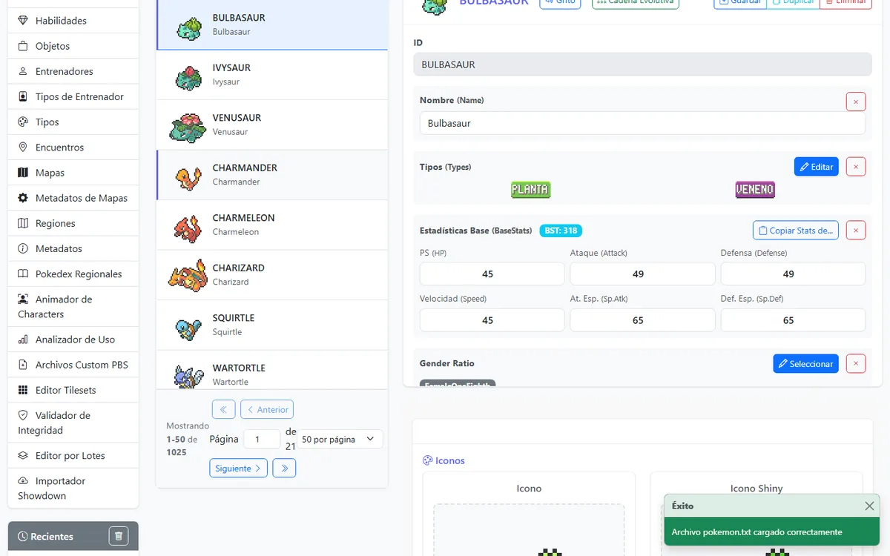
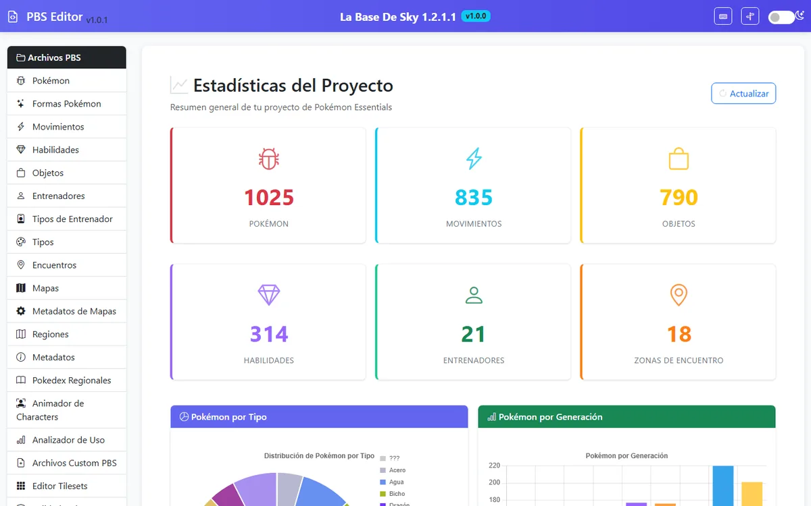
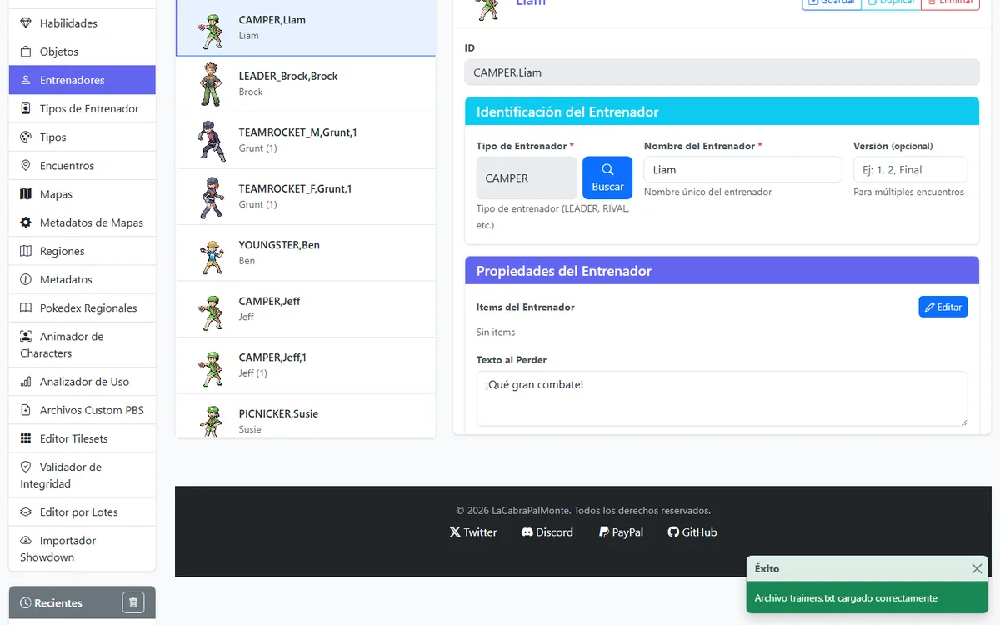
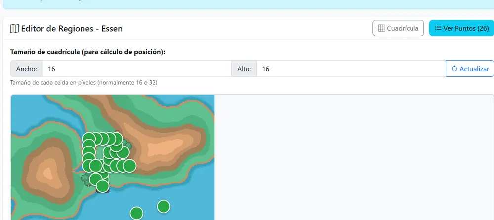
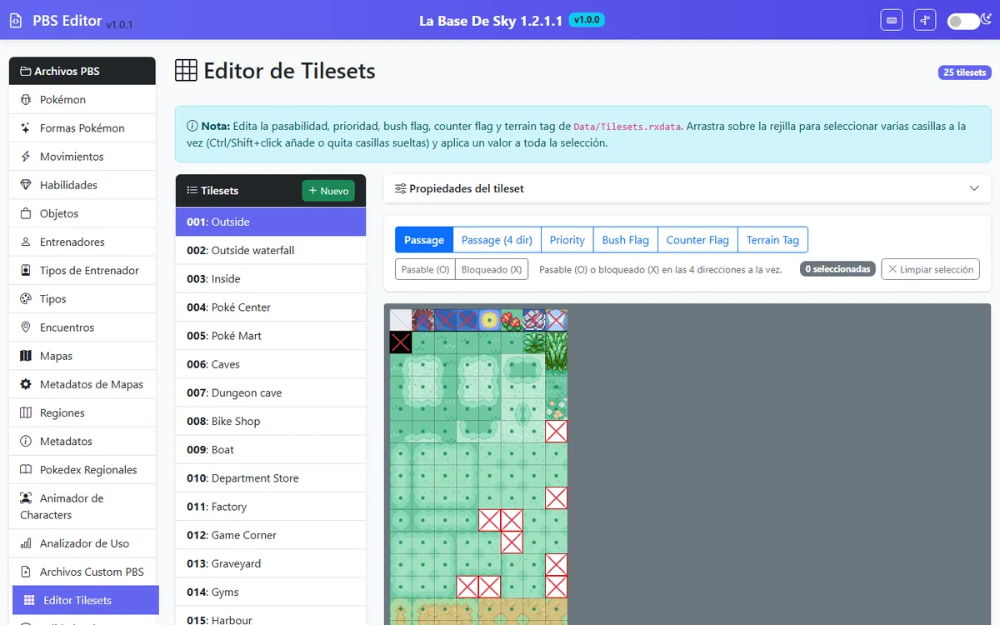

#004Charmander
Así como un Pokémon evoluciona, tus archivos PBS pasan de texto plano a datos con forma — sin perder ni una línea en el camino.
sigue bajando
Herramienta no oficial · Pokémon Essentials v21
[PIKACHU] Name = Pikachu Types = ELECTRIC BaseStats = 35,55,40,90,50,50 Abilities = STATIC HiddenAbility = LIGHTNINGROD MoveLevelUp = 1,THUNDERSHOCK,1,TAILWHIP

Así como un Pokémon evoluciona, tus archivos PBS pasan de texto plano a datos con forma — sin perder ni una línea en el camino.
Capturas de pantalla
Capturas reales de PBS Editor corriendo sobre el proyecto Pokemon Olympus.




1025 Pokemon, 835 movimientos, 790 objetos y 21 entrenadores del proyecto Pokemon Olympus, listos para editar.
Características
Un editor pensado para desarrolladores de fangames: rápido de abrir, difícil de romper.
Encuentra cualquier entrada por ID o nombre al instante, incluso en listas de miles de líneas.
Selecciona varias entradas y aplica el mismo cambio a todas de una sola vez.
Hasta 100 operaciones de historial con atajos de teclado, por si algo sale mal.
Cada guardado crea una copia con timestamp en PBS_backups/, sin que tengas que pensarlo.
Conteos, distribución por tipo, movimientos más aprendidos y curva de dificultad de entrenadores.
Añade y edita puntos de interés haciendo clic directamente sobre el mapa de cada región.
Selecciona casillas por arrastre y aplica passage, priority o terrain tag en bloque.
Pega un equipo en formato Pokémon Showdown y conviértelo directo a entradas de trainers.txt.
Cómo funciona
Descarga y ejecuta PBS_Editor_Setup.exe. Se instala como cualquier programa, sin dependencias que configurar.
La primera vez te pedirá la carpeta raíz de tu proyecto (la que contiene PBS/, Graphics/ y Data/). Queda guardada para la próxima vez.
Se abre una ventana propia con el editor, sin depender del navegador del sistema.
Descarga
Instalador con launcher, servidor y consola de depuración. No requiere Python ni permisos de administrador.
PBS_Editor_Setup.exe, o repórtalo como falso positivo al fabricante (con Windows Defender/SmartScreen basta "Más información" → "Ejecutar de todas formas"). Descárgalo siempre desde esta web o el Discord oficial.
Comunidad
El editor nació desarrollando y testeando este fangame, pero es completamente genérico para cualquier proyecto Essentials v21.
Reporta bugs, pide ayuda o comparte tu fangame
Novedades y avances del editor y del proyecto
Desarrollo: LaCabraPalMonte · Base del proyecto: Sky y dpertierra · Ícono: FireFalcon_7